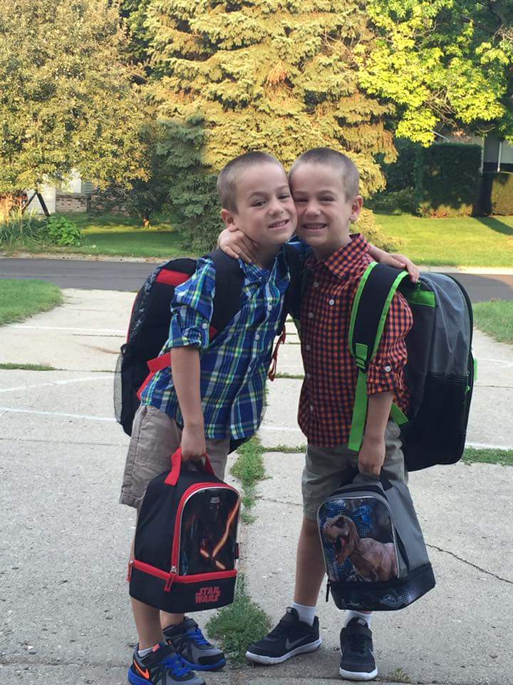
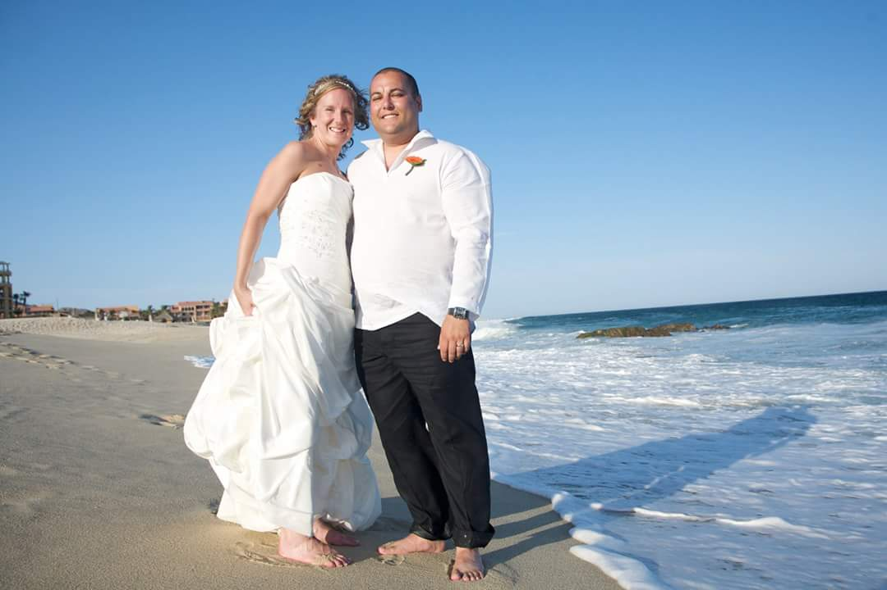

Let Me Introduce Myself
 Hello and Welcome! I’m Troy Perez; I’m 42 and live in Rochester Hills, MI. I'm orignally from Michigan, but for the first 6 or 7 years I grew up in southern Ohio. My mom was able to transfer to Michigan as a postal employee to Adrian, Michigan. I have two brothers and one sister, me being the oldest, carried a lot of weight in the home, but I also had the resposibility of taking care of my younger siblings. We moved again my fifth grade year to a small lake community known as Manitou Beach, Michigan. We lived on a lake, which is a perk, during the summer months because I enjoyed swimming and fishing. I graduated high school in 1993 and joined the Navy. I traveled all over the world to places likes Sydney, Singapore, Hong Kong, Japan, and the Persian Gulf. I decide to not re-enlist in 1998 and returned to the civilian life. It didn't last long (4 months) before joing the Army. I was attending Central Michigan University (Fire up Chips!) while in the Army reserves and decided enough was enough and didn't re-enlist in the Army. One of the greatest times I had serving was at the Pentagon 6 months after 9/11. I was in a military police unit deployed there to provided perimeter and executive protection. After getting my Bachelors Degree from CMU I went to the University of Michigan (Go Blue!) for my Masters Degree in Criminal Justice.
Finally, I was done with school and searching for the first job, which led to me to a juvenile bootcamp in Saginaw, Michigan. That job last about 2 years before I found a job in Flint, Michigan doing social work in the mental health field. Surprisingly it last nearly 8 years and now I'm living in Oakland County still working in the social worker field. A little bit of my personal side, I’m married with twin 6-year-old boys (Logan and Ellis). My wife is a school teacher in the city of Detroit at the University Preparatory Academy where she teaches 8th grade math. I'm looking at making a career change at 42 and I've dabbled in computer coding for the last 2 years or so, which then led me to take the plunge in enrolling into a bootcamp school. I'm not only a student at Grand Circus, but I'm also a student at home that still puts in 10 hours of my time into learning new coding languages, which has led me to front-end developing. My overall goal is to become a full-stack engineer in the Detroit tech boom. The one thing I've learned from all my at-home studies is to always keep learning or you'll become outdated. If I'm not learning or coding something new you'll usually find me in the picture below enjoying all that Michigan can give, other than that, you can find more about my hobbies and likes in the "about" link or you can follow me on TWITTER.